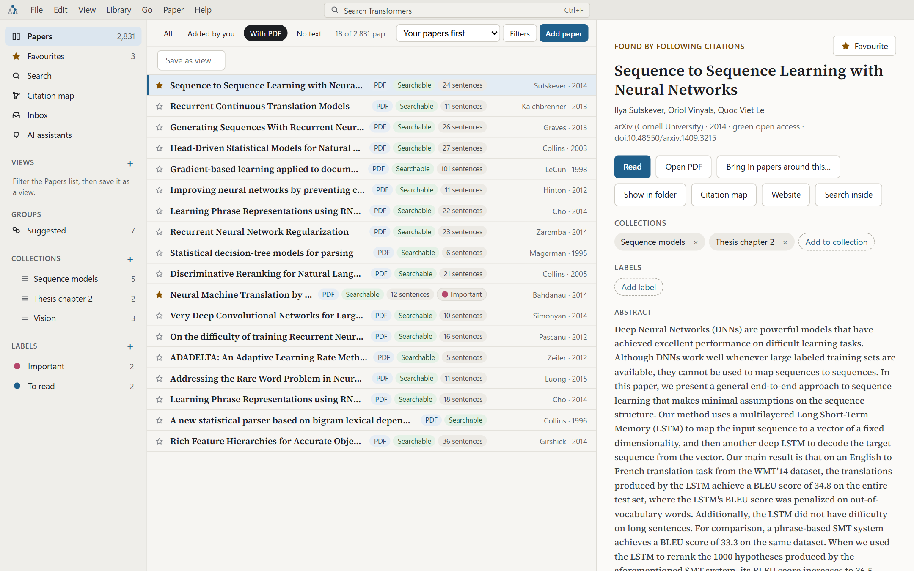
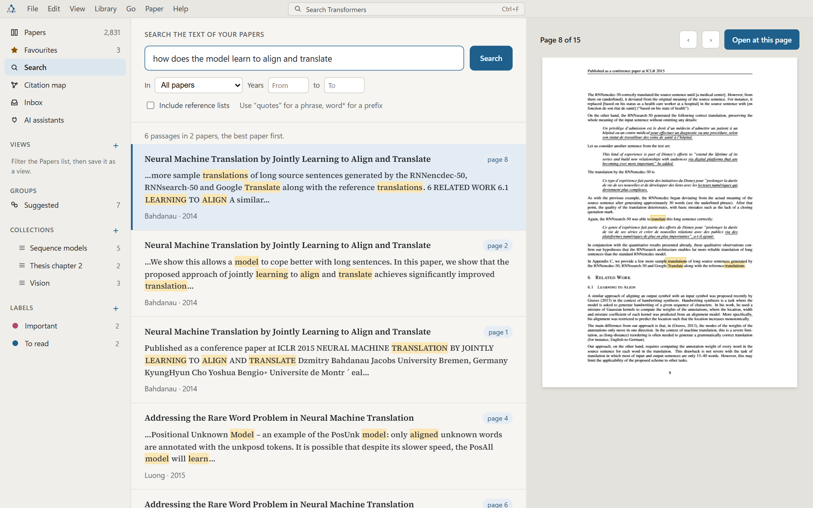
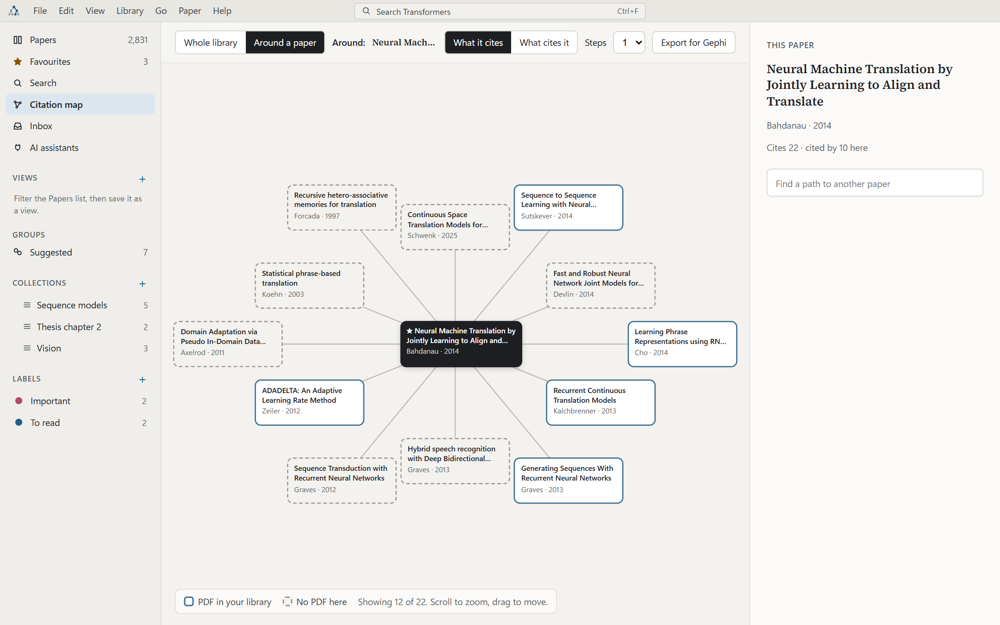
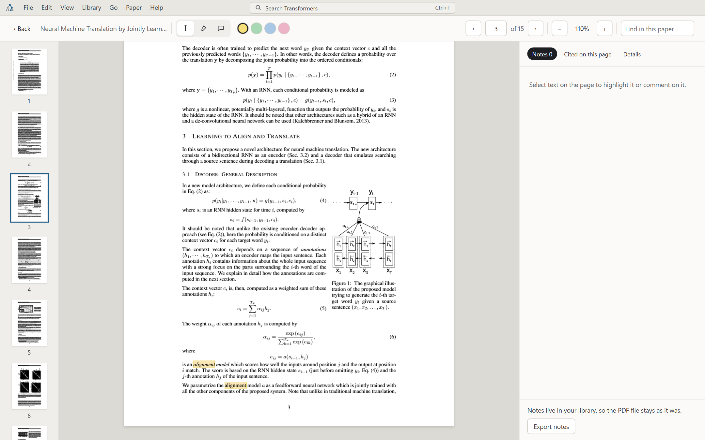
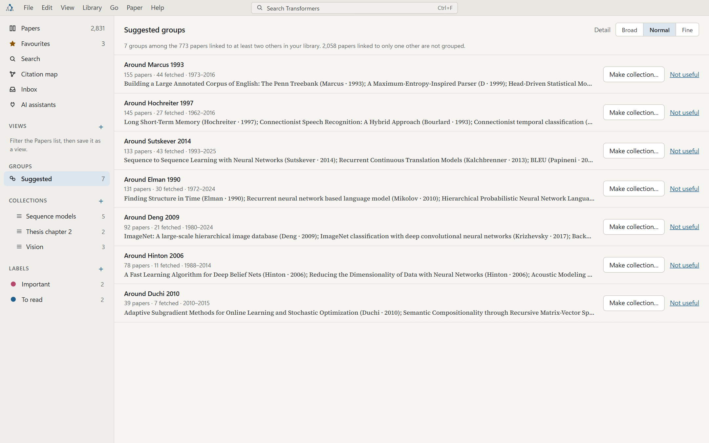
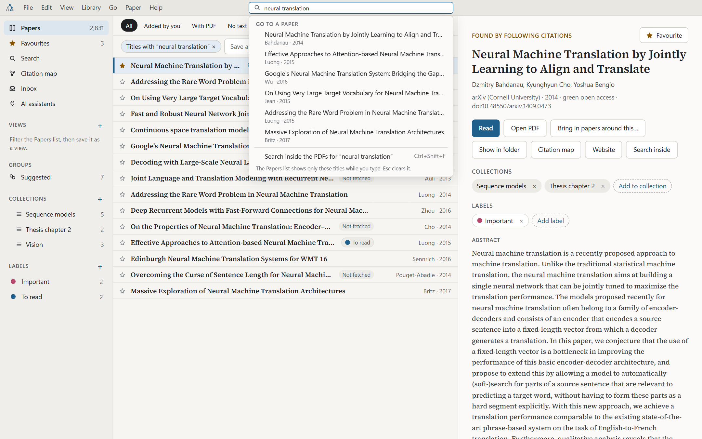

Filiation comes two ways: a desktop app, and fil, the command line. Both use the same library, so you can switch between them.
The app
Download the installer and run it. It installs for you only, needs no administrator rights, and adds fil to your PATH so a terminal and your AI assistant can find it.
Expand-Archive fil_{v}_windows_amd64.zip fil
.\fil\fil.exe version
tar xzf fil_{v}_darwin_arm64.tar.gz
sudo mv fil /usr/local/bin/
fil version
On an Intel Mac, download the darwin_amd64 archive instead.
tar xzf fil_{v}_linux_amd64.tar.gz
sudo mv fil /usr/local/bin/
fil version
See where your library lives:
fil where
Docs › Getting started
Your first library
Give Filiation one paper you know well. In a few minutes it has found what that paper cites, kept the PDFs that are free to read, and made them searchable.
Add a paper
A DOI, arXiv ID, link or title. Filiation records the paper and every work it cites.
fil add arXiv:1409.0473
Follow its references
Fetch the papers it cites, and theirs, most-cited first, up to a budget you set.
fil expand --max-nodes 300
Keep the PDFs
Download the legal open-access copies and read their text so it can be searched.
fil fetch
Search
A few keywords. Each passage comes back with its paper and page.
fil search attention alignment translation
iIn the app, each step is one action: paste into the title bar search to add a paper, then Library › Fetch PDFs. The command line and the app share the same library.
Docs › Using Filiation
The desktop app
One window, a few screens. Everything you do here, the command line can do too.
Screens

PapersYour library, one paper per row, with its PDF, labels and details beside it.

SearchKeywords across every PDF; the passage and its page, lit on the PDF.

Citation mapWhat a paper cites and what cites it, or the whole library at once.

ReaderRead, highlight and comment. Notes live in your library; the PDF stays as it was.

GroupsTopics found from the citations alone, offered as collections.

Title bar searchFind a paper you have, or paste a DOI or title to add a new one.
Keys worth knowing
Ctrl+F
Search your library from the title bar.
Ctrl+click
Select more than one paper.
Shift+click
Select a run of papers.
Ctrl+A
Select every paper in the list.
Delete
Delete the selected papers. Their folders go to the Recycle Bin.
Right-click
A paper's actions: favourite, add to a collection, label, show on the map, download its PDF, bring in papers around it, delete.
Docs › Using Filiation
Command line
Every fil command, grouped by what you are doing. A paper can be named by its fil ID, DOI, arXiv ID, OpenAlex ID or title.
fil add <paper>
Add a paper and record everything it cites. By DOI, arXiv ID, PMID, OpenAlex ID, link or title.
fil expand
Follow references outward and grow the graph, most-cited first.--max-nodes 500 --max-depth 3
fil fetch [paper]
Download the legal open-access PDFs of your papers.--max N --dry-run
fil import [file…]
Identify PDFs you already have and file them in your library.
fil zotero
Bring in your Zotero library.--dry-run --from FILE --tags --no-pdfs --no-refs --skip KEY
fil match <fil ID> [id]
Find one of your own documents in OpenAlex.
fil search <words>
Find passages in your PDFs by keyword, with their page.--paper X --view NAME --limit N --references --pick
fil list
List the papers in your library, with their PDF and text.
fil show <paper>
Tell everything the library knows about one paper.
fil neighbours <paper>
What a paper cites, and what in your library cites it.
fil path <paper> <paper>
The shortest chain of citations between two papers.
fil groups [group]
Groups of papers that cite one another.
fil stats
Summarise your library.
fil library
Show your library folder.
fil library new <folder>
Make another library in a new folder.
fil library move <folder>
Move your library to a new folder.
fil library scan
Find papers you moved, renamed or deleted in papers/.
fil extract [paper]
Read the text of your PDFs so they can be searched.--again
fil export graphml
Write the citation graph for Gephi, Cytoscape or NetworkX.
fil mcp
Serve your library to an AI assistant over MCP.--read-only --library NAME
fil where
Print where your library, settings and cache live.
fil theme
Choose fil's colours in the terminal.
fil cache clear
Delete every cached OpenAlex response.
fil version
Print the version.
Every command explains itself: fil help <command>.
Docs › Using Filiation
AI assistants (MCP)
Connect Filiation to the assistant you already use. It can then search your library and answer with the page each passage came from.
iThe easiest way: open the app's AI assistants screen and press Connect. It finds the assistants on your computer and writes their settings for you, keeping a copy of the old file.
Set it up by hand
Run this once in a terminal:
claude mcp add filiation -- fil mcp
Start a new Claude Code session and ask it about your library.
Add this to claude_desktop_config.json. On Windows it is in %APPDATA%\Claude, on macOS in ~/Library/Application Support/Claude.
Find passages by keyword, with their page, to quote.
get_paper
Everything about one paper, including why it has no PDF or text.
neighbours
What a paper cites and what cites it, with the sentence it cites each in, when one was found.
find_path
The chain of citations between two papers.
citation_groups
The library's topics, found from its citations alone.
library_stats
What is in the library.
add_paper
Add a paper by DOI, arXiv ID, PMID, OpenAlex ID, link or title.
expand_graph
Follow references outward, within a budget.
fetch_pdfs
Download more open-access PDFs.
iAdd --read-only after mcp and the assistant can read your library but not add to it, and nothing it does reaches the network. Add --library Thesis to point it at another library.
Docs › Using Filiation
Bring in Zotero
Keep using Zotero for your references. Filiation reads its library and grows a citation map around it.
Filiation reads Zotero 7 or later through its local API, read-only: it never changes your Zotero library. Zotero must be running. In Zotero, choose Edit › Settings › Advanced and tick Allow other applications on this computer to communicate with Zotero.
fil zotero --dry-run # see what would come in
fil zotero # bring it in
In the app, the same is in the Inbox, under Zotero.
Options
--dry-run
Say what would come in, and write nothing.
--tags
Make labels from the tags you added in Zotero.
--no-pdfs
Do not copy the PDFs.
--no-refs
Do not record what each paper cites.
--skip KEY
Leave out a Zotero collection, by its key, and those inside it.
--from FILE
Read a Zotero RDF export instead of the running Zotero.
From an export file
If Zotero isn't on this computer, export the library as Zotero RDF with its files, then:
fil zotero --from "My Library.rdf"
Docs › Reference
How it works
What Filiation keeps, where it comes from, and the few rules it never breaks.
fil IDs
Every paper gets a fil ID, such as F7K2M9QXA, made once and never changed. Use it, a DOI, an OpenAlex ID or a title wherever a command asks for a paper.
Where citations come from
Reference lists come from OpenAlex, already matched to the papers they name. No model reads your papers to guess at links, so every line on the map is a real citation.
Stubs
A paper something cites, but that Filiation has not fetched yet, is a stub: its title may be known, its abstract and references are not. fil expand fetches stubs, most-cited first.
Open access only
Filiation downloads only the legal open-access copies OpenAlex lists. It never scrapes a publisher's site or uses anyone's login. For other papers, add the PDFs you have.
Your library folder
A library is a folder you choose: a database file, and a papers/ folder with one readable folder per paper. Copy it, back it up, or sync it like any other folder. fil export graphml writes the graph out for other tools.
Docs › Reference
Troubleshooting
The questions people ask most, and what to do.
Common questions
My assistant says the server failed to start.
Run fil version in a terminal. If that fails, the assistant cannot find fil either: put the full path to fil in its settings, or reinstall with "Add fil to my PATH" ticked.
The assistant cannot find a paper I added.
Both must use the same library. Compare fil where with the path in the server's first log line, and check the assistant's settings for a --library argument.
Why do so many papers have no PDF?
Filiation only keeps legal open-access copies, and most papers have none: about one in eight overall, many more in physics, very few in the humanities. Add the PDFs you have with fil import or the Inbox.
Expansion stopped after one step.
The papers probably have no reference lists in OpenAlex. That is common outside the sciences, and is the data, not a fault. Each paper shows whether its references are known.
Windows warned me about the installer.
The installer is not signed yet. Choose More info, then Run anyway.
Where are my files?
Run fil where. Your library is a folder you chose, with a papers/ folder of readable PDF folders inside. Uninstalling the app never touches it.
Still stuck? Open an issue with the output of fil version and fil where.